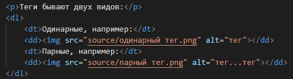
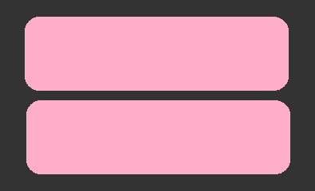
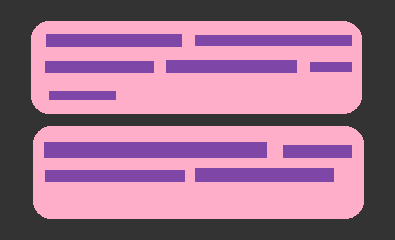
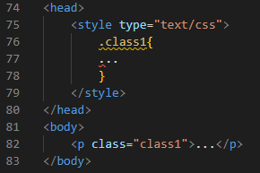
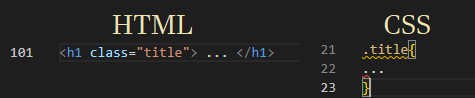
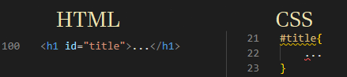
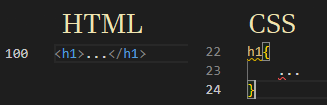
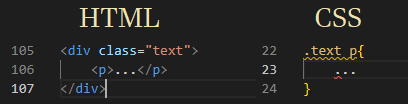
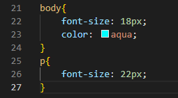

Основы HTML и CSS.
Введение в HTML.
HTML - язык гипертекстовой разметки, включающий в себя:
- изображения;
- заголовки;
- текст;
- иные элементы, находящиеся на веб-странице.
HTML-файлы смогут иметь разширение .htm или .html.
HTML состоит из различных тегов и атрибутов. Набор тегов составляет иерархическое дерево, в котором одни теги являются дочерними по отношению к другим (родительским). Браузеры читают HTML сверху вниз. Это значит, что то, что было первым прописанов коде, первым появится на странице в браузере.
Теги бывают двух видов:
- Одинарные, например:

- Парные, например:

Базовые теги:
- !DOCTYPE - одинарный тег, определющий тип документа. Для веб страниц это всегда html.
- head - парный тег, в котором содержится информация об html-докементе: заглавие, автор, описание, кодировка, стили и тд.
- title - парный тег, в котором описывается заглавние html-документа.
- link - одинарный тег, с помощью которого в html-документу подключатся вспомогательные файлы, например стили css.
- meta - многофункциональный одинарный тег, в котором с помощью атрибутов прописывается, например, кодировка.
- body - тело сайта. Все элементы, включенный в контейнер body будут отображаться на веб-странице.
Атрибут - это дополнительный параметр для тега. Например:
Атрибуты widht и height отвечают за ширину и высоту изображения соответственно.
Если не указать ширину и высоту, изображение будет своего фактического размера, такой, какой оно было загружено на сайт.
Есть ряд обзательных атрибутов, например, scr="...". Для того, чтобы загрузить на сайт изображение, обязательно должен быть указан путь к нему (оно должно быть в папке с проектом, желательно в подпапке source или img. Так же обязательно должен быть атрибут alt="...".
Теги можно вкладывать друг в друга. Это образует иерархическое дерево тегов. Например:
Тег dl является родительским, а dd и dt дочерними. Для удобства в коде горизонтально отделяют элементы одного уровня от элементов другого двумя или четырьмя пробелами.
Основные типы тегов:
- Блоки.
- Блочные теги занимают всю ширину документа и начинаются с новой строки.
- 
- Строки.
- Строчные теги занимают столько места, сколько для отображения их содержимого фактически нужно. Следуют друг за другом одной строкой до тех пор, пока не упираются в границу своего блока.
- 
- ASCII - это американская кодировка, которая разрабатывалась для английского языка.
- UTF-8 - на данный момент самя популярная кодировка в интернете. Вмещает в себя до 2млрд символов. Коды от 0 до 127 используются для представлени символов ASCII.
Кодировка - это набор символов, представленный в таблице, которая содержит сам символ и его код (например, двоичный).
На данный момент популярны две кодировки:
Так как, например, французский язык имеет надстроечные символы, а русский алфавит не похож на английский, ASCII не мог быть универсальным, поэтому был разработан Unicode для расширения ASCII. Со временем в Unicode закончилось место для размещения новых символов, и был создан UTF-8.
Стилизация HTML-документов.
Стили в HTML-документ можно подключить двумя способами:
- Подключить css-файл с помощью тега link, например:
- type - тип подключаемого документа;
- rel - отношения между файлами;
- href - ссылка на файл;
- Прописать стили в контейнере head, например:
- 
link прописывается в контйнере head и имеет три важных атрибута:
В CSS класс начинается с ., а ID с #.
Введение в CSS.
CSS - каскадные таблицы стилей, внешнее оформление html-документа.
CSS-файлы имеют расширение .css.
CSS-файл состоит из селекторов, в которых перечислены свойства и значения к ним. CSS-файлы, так же как и html-докумены читаются браузером сверху вниз потоком.
Дочерние элементы могут наследовать некоторые стили родительских элементов, например: цвет, размер и тип шрифта.
Некоторые теги имеют стандартное оформление браузера. Т.е. браузер сам задает стандартное оформление такому элементу, если стиль не был задан вручную.
Стилизация элементов возможна через:
- Атрибут class.
- 
- Уникальный идентификатор ID:
- может быть только один на странице;
- считается нецдачным для страниц большого объема;
- в основном используется с JavaScript.
- 
- без дополнительного атрибута:
- 
Возможна так же стилизация несколльких элементов одновременно. Для этого нужно перед октрытием фигурной скобки в css-файле перечислить их через запятую (например: h1, h1, h3{).
Стилизация дочерних элементов возможна следующим образом:
Наследование стилей.
Дочерние элементы могут наследовать некоторые стили родительских элементов, если они не были заданы дочерним элементам вручную. Например:
В примере стилизация размера шрифта наследоваться не будет, потому что он был прописан дочернему элементу отдельно, а цвет будет общим и для родительского элемента, и для дочернего.